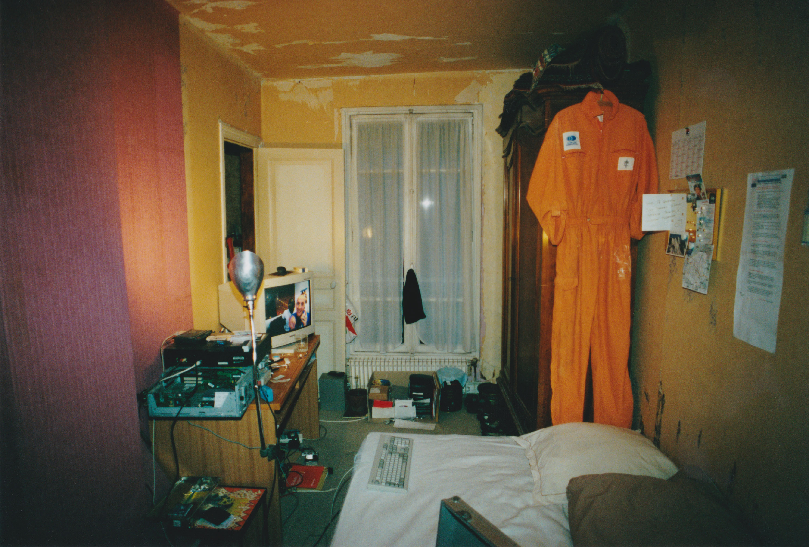
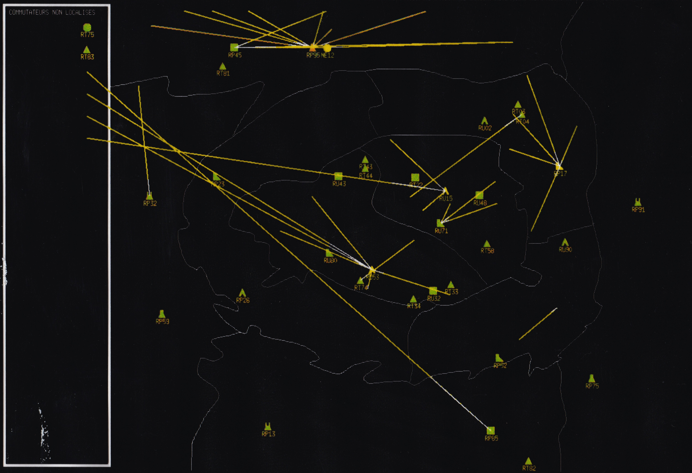

STONE TRACKER
LOOKING FOR THE FOUNTAIN OF REMEMBRANCE

BIENVENUE DANS LES AVENTURES DE LA FONTAINE DU SOUVENIR
PIERRE EST UN CHERCHEUR PASSIONNÉ DE MYTHOLOGIE ET D’ARCHÉOLOGIE. APRÈS DES ÉTUDES POUSSÉES SUR UNE ROCHE LÉGUÉE PAR UN PROCHE, IL DÉCOUVRE L'EXISTENCE D'UNE FONTAINE CACHÉE DANS UNE GROTTE QUI PERMETTRAIT DE SE SOUVENIR DE TOUT. SA QUÊTE CONSISTE ALORS À TROUVER DEUX AUTRES PIERRES QUI, ASSOCIÉES À CELLE QU’IL POSSÈDE, LUI DONNERONT ACCÈS À LA FONTAINE DU SOUVENIR. POUR CELA IL DEVRA SE RENDRE DANS DIFFÉRENTS LIEUX. DANS CE JEU LA CONTEMPLATION DEVIENT ACTIVE, ON CHERCHE DANS LES IMAGES DES INDICES, DES MOTS, ON LES PARCOURT DE LONG EN LARGE COMME ON PARCOURT NOS SOUVENIRS.
START

Veuillez tourner votre appareil en mode paysage